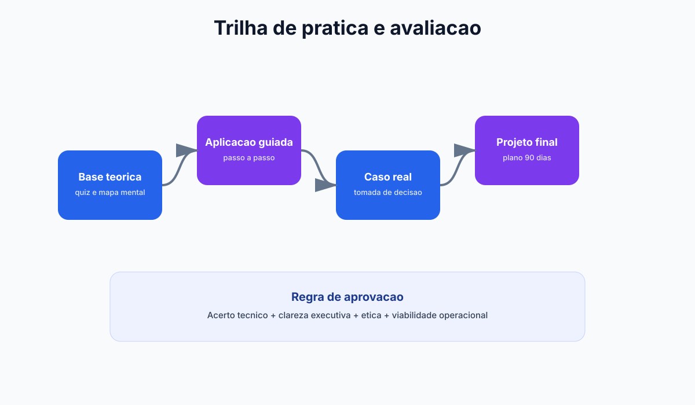

Stack enxuto
Menos ferramentas, mais resultado.
Módulo 4
Aqui você aprende a usar IA no dia a dia com prompts prontos para copiar, integrações comuns e mini tutoriais orientados para administração.
Por que esta imagem? O módulo trata de stack de ferramentas e integração, e a foto destaca justamente o ambiente técnico-operacional.
Menos ferramentas, mais resultado.
Integre texto, dados e automação no-code.
SOP e prompts com formato replicável.



Modelos de linguagem ajudam na criação de relatórios, síntese de reuniões, planejamento e apoio a decisões administrativas.
Plataformas no-code conectam IA a planilhas, CRM, e-mail e formulários para automatizar rotinas administrativas.
Assistentes analíticos explicam variações de KPI e sugerem ações, tornando dashboards mais acionáveis para gestores.
Sistema didático do módulo
Resumo
Ferramenta boa é aquela que resolve o problema com menor acoplamento possível ao fluxo existente.
Exemplo real
LLM para texto + planilha/BI para métrica + automação no-code para execução geralmente cobre 80% da rotina administrativa.
Prompt pronto
Os prompts desta seção geram SOP, resumo executivo e plano de ação com formato replicável entre equipes.
Atenção
Muitas ferramentas sem arquitetura aumentam custo, perda de contexto e retrabalho de integração.
Adapte os campos entre colchetes e aplique imediatamente na rotina administrativa.
Prompt: resumo executivo de reunião
Transforme as anotações abaixo em um resumo executivo para diretoria. Inclua: decisões tomadas, pendências, responsáveis, prazos e próximos passos. Anotações da reunião: [cole as notas aqui]
Prompt: análise de produtividade da equipe
Analise os dados abaixo e gere um relatório de produtividade por equipe. Aponte gargalos, causas prováveis e 5 ações de melhoria com priorização por impacto. Dados: [cole indicadores de produtividade]
Prompt: criação de SOP (procedimento padrão)
Crie um SOP para o processo [nome do processo]. Estruture em: objetivo, escopo, responsáveis, etapas, checklist de qualidade, riscos e plano de contingência.
Microsoft 365 + Copilot
Playbook direto para rotina administrativa usando apps do Office com foco em produtividade, qualidade e rastreabilidade.
Resumo
Com Copilot, os apps do Microsoft 365 deixam de ser apenas editores e viram assistentes de execução para texto, análise, apresentação e comunicação.
Atenção
Use IA para acelerar, mas sempre valide números, nomes, datas e decisões antes de compartilhar para clientes, diretoria ou auditoria.
| Aplicativo | Uso com IA | Ganho esperado | Controle recomendado |
|---|---|---|---|
| Word | Minutas, políticas internas, revisão de texto e resumo executivo | Menos tempo de redação e padronização de linguagem | Checklist final de compliance e tom institucional |
| Excel | Classificação de dados, explicação de variações e fórmulas assistidas | Análise mais rápida de indicadores e exceções | Validação de fórmulas e conferência de amostras |
| PowerPoint | Estrutura narrativa, geração de slides e síntese de resultados | Redução do tempo para preparar apresentações executivas | Revisão de consistência visual e dados-chave |
| Outlook | Triagem de e-mails, resumo de threads e resposta sugerida | Priorização de demanda e menor tempo de resposta | Critérios de prioridade e aprovação para mensagens críticas |
Prompt Word: política interna em versão executiva
Atue como gerente administrativo e transforme o texto abaixo em uma politica interna clara para toda a empresa. Entregue em 5 blocos: 1) Objetivo 2) Escopo 3) Responsaveis 4) Regras praticas (faça em checklist) 5) Riscos de nao conformidade Texto base: [cole aqui a minuta atual]
Prompt Excel: leitura de KPI e plano de ação
Analise esta tabela de indicadores e gere um resumo gerencial com linguagem de diretoria. Formato de saida: - 3 achados principais - 2 riscos operacionais - 5 acoes priorizadas (impacto alto, medio, baixo) - KPI para acompanhar semanalmente Dados: [cole os dados da planilha]
Prompt PowerPoint: narrativa de reunião executiva
Monte a estrutura de uma apresentacao executiva com 8 slides sobre [tema]. Para cada slide, informe: - titulo objetivo - mensagem principal (1 frase) - evidencia que deve aparecer - decisao esperada da lideranca No final, inclua slide de plano 30-60-90 dias.
Prompt Outlook + Copilot: triagem e resposta de e-mails
Classifique os e-mails abaixo em 4 categorias: critico hoje, importante semana, delegavel, informativo. Para cada e-mail entregue: - prioridade - acao recomendada - prazo sugerido - rascunho de resposta com tom profissional E-mails: [cole os e-mails ou resumo da caixa de entrada]
Dias 1-5
Base de uso e governança
Dias 6-10
Execução assistida
Dias 11-15
Escala controlada
| App | KPI principal | Meta inicial (30 dias) | Frequência |
|---|---|---|---|
| Word | Tempo médio para gerar minuta validada | Reduzir em 30% | Semanal |
| Excel | Tempo de análise de indicadores | Reduzir em 25% | Semanal |
| PowerPoint | Tempo de preparação de reunião executiva | Reduzir em 35% | Quinzenal |
| Outlook | SLA de resposta para e-mails prioritários | Melhorar em 20% | Diária |
Prompt avançado: Word + risco regulatório
Revise o texto abaixo como auditor interno. Entregue: 1) trechos com risco regulatorio 2) sugestao de reescrita segura 3) checklist final de conformidade Documento: [cole o texto]
Prompt avançado: Outlook + despacho diário
Com base nos e-mails do dia, monte um despacho para gestor contendo: - top 5 prioridades - bloqueios criticos - decisoes que precisam de aprovacao - plano de acao para as proximas 24h Contexto: [cole resumo da caixa de entrada]
| Cenário | Integração sugerida | Resultado esperado | Nível de esforço |
|---|---|---|---|
| E-mail para tarefas | IA + Gmail/Outlook + Trello/Asana | Conversão automática de demanda em tarefas | Baixo |
| Formulários internos | Forms + IA + Planilhas | Classificação de solicitações e priorização | Baixo |
| Relatórios gerenciais | Planilhas/BI + IA generativa | Resumo executivo semanal automático | Médio |
| Fluxo financeiro | ERP + IA + alerta de anomalia | Detecção antecipada de inconsistências | Médio a alto |
Criar prompts isolados resolve tarefas pontuais, mas não sustenta uma operação administrativa. Para escalar, você precisa padronizar contexto, formato de saída, critério de revisão e versionamento de prompt.
Todo prompt deve começar com objetivo, público, nível de detalhe e formato final desejado. Isso reduz ambiguidades e retrabalho.
Solicite tabelas, blocos ou checklist com campos fixos. Quanto mais estruturada a resposta, mais fácil automatizar e auditar.
Saídas informativas podem ser liberadas rapidamente; saídas com impacto financeiro, jurídico ou pessoas exigem validação humana formal.
Registre erros frequentes, ajuste instruções e mantenha biblioteca versionada. Prompt bom é ativo vivo, não texto estático.
Módulo hands-on para transformar conhecimento em fluxo operacional com ferramentas reais.
Criação, iteração e padronização de prompts para tarefas administrativas.
Carga: 4h
Conexão de IA com planilhas, formulários, e-mail e gestão de tarefas.
Carga: 4h
Síntese de indicadores, alertas e recomendações para liderança.
Carga: 3h
Montagem de fluxo ponta a ponta com validação e melhoria contínua.
Carga: 3h
Aplicacao pratica para transformar teoria de Modulo 4 em ganho operacional mensuravel.
Mapeie o fluxo atual de desenho de stack operacional e identifique gargalos de tempo, custo e retrabalho.
Evidencia: mapa AS-IS com 3 gargalos priorizados.
Desenhe um piloto de 2 semanas para ferramentas praticas e orquestracao, com escopo controlado e checkpoints diarios.
Evidencia: plano de execucao com dono, prazo e criterio de parada.
Defina baseline e metas para tempo de execucao assistida, comparando antes vs depois com o mesmo periodo.
Evidencia: painel simples com 3 KPIs e tendencia semanal.
Implemente regras de revisao humana, classificacao de dados e trilha de auditoria das decisoes.
Evidencia: checklist de risco com responsaveis e frequencia de revisao.
Planeje extensao para um segundo processo mantendo qualidade, custo sob controle e aprendizagem da equipe.
Evidencia: roadmap 30-60-90 dias com marco de escala.
Prompts curados para acelerar analise, decisao e implantacao com foco em Modulo 4.
Prompt 1: Diagnostico executivo
Atue como consultor de ferramentas praticas e orquestracao. Faça um diagnostico rapido do processo [desenho de stack operacional] com 5 gargalos, impacto estimado e prioridade de ataque.
Prompt 2: Plano 30-60-90
Monte um plano 30-60-90 dias para implementar IA em [desenho de stack operacional] incluindo objetivos, entregas por fase, donos e riscos.
Prompt 3: KPIs e baseline
Defina um modelo de medicao para [tempo de execucao assistida] com baseline, meta trimestral, formula e frequencia de acompanhamento.
Prompt 4: Governanca minima
Crie uma politica minima de uso de IA para este contexto com regras de dados, revisao humana, aprovacao e auditoria.
Prompt 5: Escala com controle
Proponha como escalar o piloto para outra area sem perder qualidade, informando criterios de readiness e plano de capacitacao.
Use estes prompts para estruturar seu stack de IA, decidir qual ferramenta usar e como integrar sem duplicação.
Prompt: Qual ferramenta escolher (ChatGPT, Claude, Gemini, etc)? Matriz de comparação
Estou escolhendo 1 ferramenta IA principal para [meu caso de uso]. Compare: Para cada ferramenta (ChatGPT, Claude, Gemini, Copilot, Perplexity): 1. Melhor para: [qual tarefa específica?] 2. Capacidade de contexto: [quanto texto cabe?] 3. Custo mensal estimado: [R$ com volumes X] 4. Limite de uso/mês: [há restrição?] 5. Integrações disponíveis: [com quais sistemas?] 6. Segurança de dados: [dados ficam privado ou podem treinar modelo?] 7. Risco de falha: [quando não funciona bem?] Para meu caso específico: - Tipo de tarefa: [classificação, síntese, geração, pesquisa?] - Volume mensal: [X requisições] - Criticidade: [impacta quanto %?] - Orçamento: [qual é meu range?] Recomendação: qual ferramenta? Qual é plano B?
Prompt: Estruturar orquestração de ferramentas sem duplicação ou conflito
Vou usar MÚLTIPLAS ferramentas IA na minha operação. Como estruturar sem desperdício ou conflito? Arquitetura em 4 camadas: CAMADA 1 - Interface (onde usuário interage) - [Ferramenta A para tarefa X] - [Ferramenta B para tarefa Y] - [Ferramenta C para tarefa Z] CAMADA 2 - Orquestração (sequência e lógica) - Quando usar qual ferramenta? - Em qual ordem executar? - Como passar dados entre elas? CAMADA 3 - Dados (armazenamento e qualidade) - Qual é a fonte de dados fiável? - Como manter atualizado? - Quem tem acesso? CAMADA 4 - Governança (controle e auditoria) - Quem aprova as decisões de IA? - Como documentar o que aconteceu? - Como detectar erros? Recomendação: qual ordem implementar? Starting com qual camada?
Prompt: Plano de treinamento de equipe em ferramentas IA
Preciso treinar minha equipe para usar IA no dia a dia. Monte um plano: SEMANA 1 (Noções de início): - Dia 1-2: O que é prompt e como estruturar - Dia 3-4: Demonstração ao vivo de [minha ferramenta] - Dia 5: Laboratório: todos enviam 3 prompts reais SEMANA 2-3 (Prática e aprofundamento): - Avançado: como incluir contexto em prompts - Segurança: o que NUNCA enviar para IA - Casos: 5 examples reais do seu setor SEMANA 4 (Aplicação no dia a dia): - Cada pessoa aplica em seu processo - Documenta resultado e tempo economizado - Compartilha aprendizado SUPORTE CONTÍNUO: - Centro de excelência com consultores IA - Biblioteca de prompts prontos por área - Chat de dúvidas (Slack, Teams) - Boletim mensal com boas práticas KPI: qual % da equipe usa regularmente IA em 90 dias?